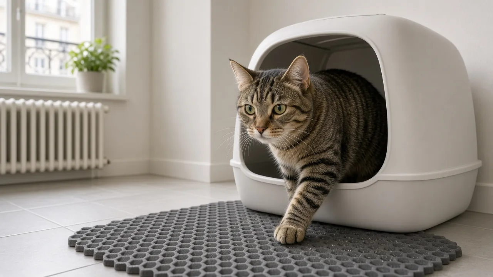
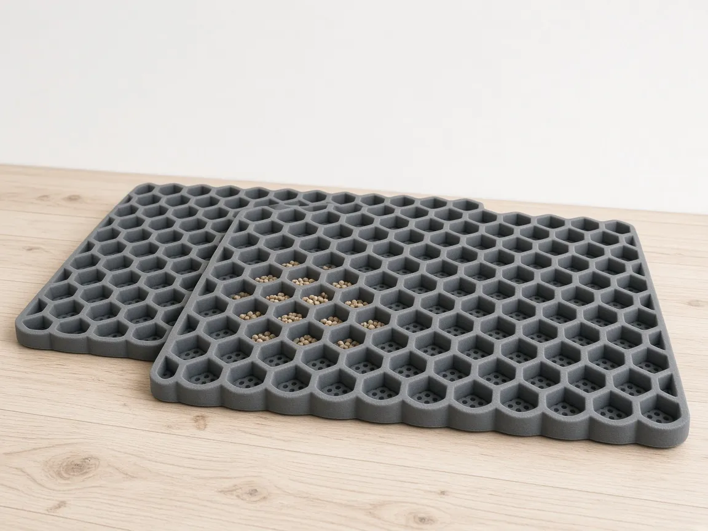
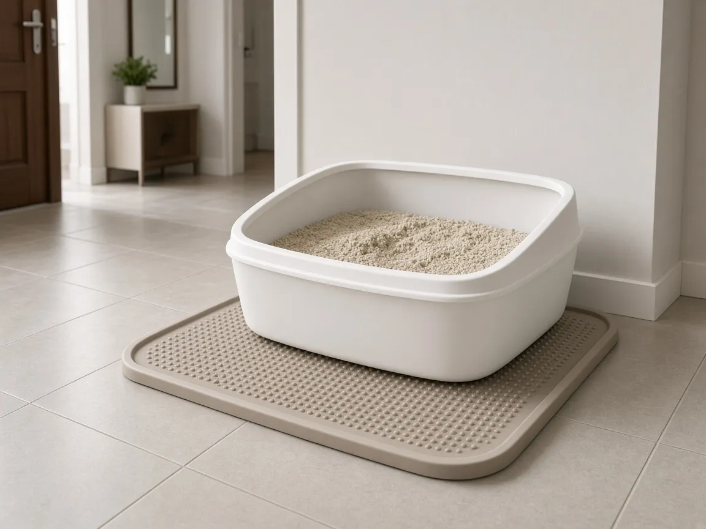
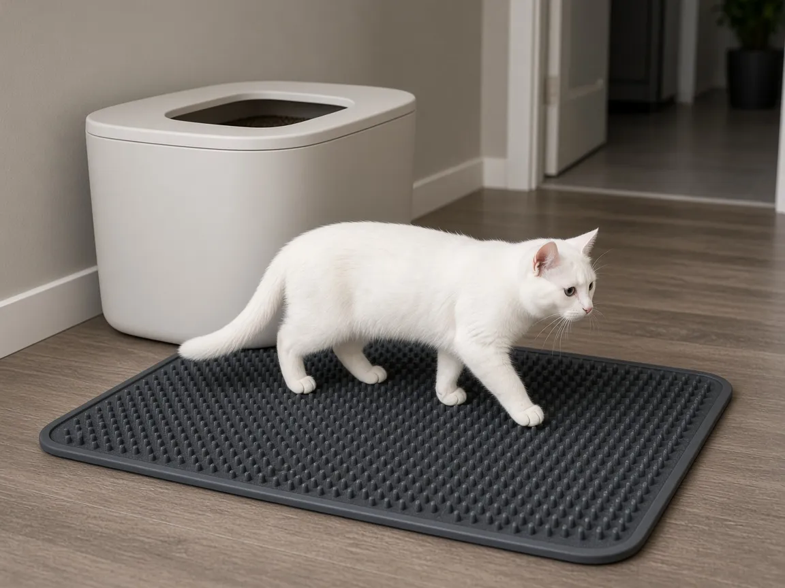

Tapis de litière pour chat : lequel choisir en appartement ?

En appartement, la litière est souvent à deux pas du salon ou de la chambre. Et chaque passage de ton chat laisse quelques grains collés à ses pattes, qui finissent sur le parquet, sous les meubles, parfois jusque dans le lit. Un bon tapis de litière retient l’essentiel de ces grains à la sortie du bac. Voici les trois types qui marchent le mieux, et comment choisir selon ta litière et la place dont tu disposes.
Les 4 points à vérifier avant d’acheter
- La taille : le tapis doit dépasser largement l’entrée du bac. Compte au moins deux à trois foulées de ton chat, soit souvent 60 cm de profondeur ou plus.
- Le type de litière : les petits grains (agglomérante fine, silice) passent dans les trous d’un tapis nid d’abeille ; les gros granulés (bois, végétale) se retiennent mieux sur une surface texturée.
- Le nettoyage : vérifie s’il se secoue, s’aspire, se rince à l’eau ou passe en machine. Un tapis difficile à vider finit vite au placard.
- Le confort sous les pattes : certains chats évitent les surfaces trop dures ou piquantes. Une matière souple et antidérapante est plus facilement acceptée.
1. Le tapis double couche en nid d’abeille

Le piège à grains le plus efficace
Les grains tombent à travers les alvéoles et restent coincés entre les deux couches. Pour vider, tu ouvres le tapis et tu reverses les grains dans le bac ou à la poubelle. C’est le modèle le plus populaire pour les litières agglomérantes fines. Choisis une version imperméable en dessous si ton chat a tendance à gratter fort ou à faire au bord du bac.
Voir sur Amazon : tapis nid d’abeille2. Le tapis en silicone à rebords

Pour protéger le sol sous le bac
Ce tapis se glisse sous le bac et déborde devant. Ses rebords retiennent les grains projetés quand ton chat gratte, et il se rince en quelques secondes sous la douche. Il retient moins les grains collés aux pattes qu’un nid d’abeille, mais c’est l’idéal pour un bac ouvert ou un chat qui envoie de la litière partout. Bonus : il protège le parquet en cas de petit accident.
Voir sur Amazon : tapis en silicone3. Le grand tapis texturé

Le meilleur allié d’un bac à entrée par le dessus
Un grand tapis en PVC ou caoutchouc avec une surface à picots ou à brosses « nettoie » les coussinets à chaque pas. Il est particulièrement efficace avec un bac à entrée par le dessus, qui retient déjà beaucoup de grains. Il s’aspire facilement et se lave à l’eau. Si ton chat hésite à marcher dessus au début, préfère une texture plus douce.
Voir sur Amazon : grands tapis texturésQuel tapis pour quelle situation ?
| Situation | Tapis conseillé | Point d’attention |
|---|---|---|
| Litière agglomérante fine | Nid d’abeille double couche | Le vider régulièrement |
| Bac ouvert, chat qui gratte fort | Silicone à rebords | Bien le centrer sous le bac |
| Bac à entrée par le dessus | Grand tapis texturé | Texture acceptée par le chat |
| Litière bois ou végétale | Grand tapis texturé | Aspirer plutôt que secouer |
Nos astuces pour un appartement sans grains
- Place le tapis dès la sortie du bac, sans espace entre les deux : le premier pas doit tomber dessus.
- Combine deux solutions si besoin : un tapis en silicone sous le bac et un nid d’abeille devant.
- Vide ou secoue le tapis tous les deux ou trois jours, avant qu’il ne déborde.
- Évite les tapis de bain en tissu : les grains s’y incrustent et ils gardent les odeurs.
- Si tu veux aussi réduire les corvées, jette un œil à notre guide litière automatique en petit appartement.
FAQ
Un tapis de litière suffit-il à éviter toutes les traces ?
Il en retient la grande majorité, mais quelques grains peuvent encore passer, surtout avec une litière très fine. Un tapis assez grand et bien placé fait la plus grosse différence.
Comment nettoyer un tapis nid d’abeille ?
Ouvre les deux couches au-dessus de la poubelle ou du bac pour vider les grains, puis passe un coup d’aspirateur. La plupart se rincent à l’eau claire ; laisse-le bien sécher avant de le remettre.
Mon chat refuse de marcher sur le tapis, que faire ?
Certains chats n’aiment pas les surfaces trop rigides ou piquantes. Essaie un modèle plus souple, laisse-le le découvrir sans le forcer, et pose-le d’abord un peu plus loin du bac avant de le rapprocher.
Quelle taille de tapis choisir dans un petit appartement ?
Environ 60 × 45 cm couvre bien la sortie d’un bac standard. Dans une salle de bain étroite, un modèle long et étroit qui suit le passage du chat est souvent plus pratique qu’un grand carré.
Notre avis
Pour la plupart des appartements avec une litière agglomérante, le tapis double couche en nid d’abeille est le meilleur rapport efficacité et prix. Si ton chat projette la litière en grattant, ajoute un tapis en silicone à rebords sous le bac. Et avec un bac à entrée par le dessus, un grand tapis texturé complète parfaitement le dispositif. Pour le reste de l’équipement, vois notre checklist complète pour chat d’appartement.
Liens affiliés Amazon : une commission peut être versée, sans surcoût pour toi.